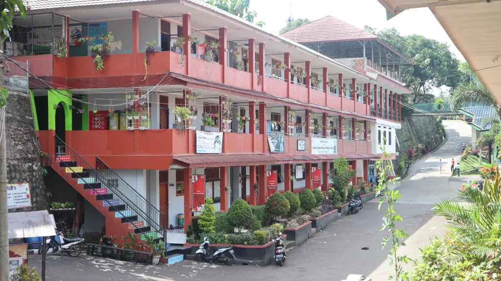

Visi
Sekolah Islam terpadu dan pesantren
SMAIT Al Kahfi
Pendidikan nasional dan pesantren untuk membentuk pribadi shalih, muslih, dan qudwah.

01Shalih
Membangun pribadi berakhlak.
02Muslih
Menebar manfaat bagi sesama.
03Qudwah
Tumbuh menjadi teladan.
Sambutan kepala sekolah
Selamat datang di SMAIT Al Kahfi.
Misi
- Memadukan pendidikan nasional dengan pendidikan pesantren.
- Membina pribadi yang shalih, muslih, dan mampu menjadi teladan.
- Mengembangkan kemampuan akademik, minat, bakat, dan kepemimpinan santri.
Informasi sekolah
Temukan informasi yang dibutuhkan.
Informasi pendaftaran
Penerimaan santri baru
Informasi persyaratan, jadwal, dan proses pendaftaran tersedia melalui layanan resmi Pesantren Al Kahfi.